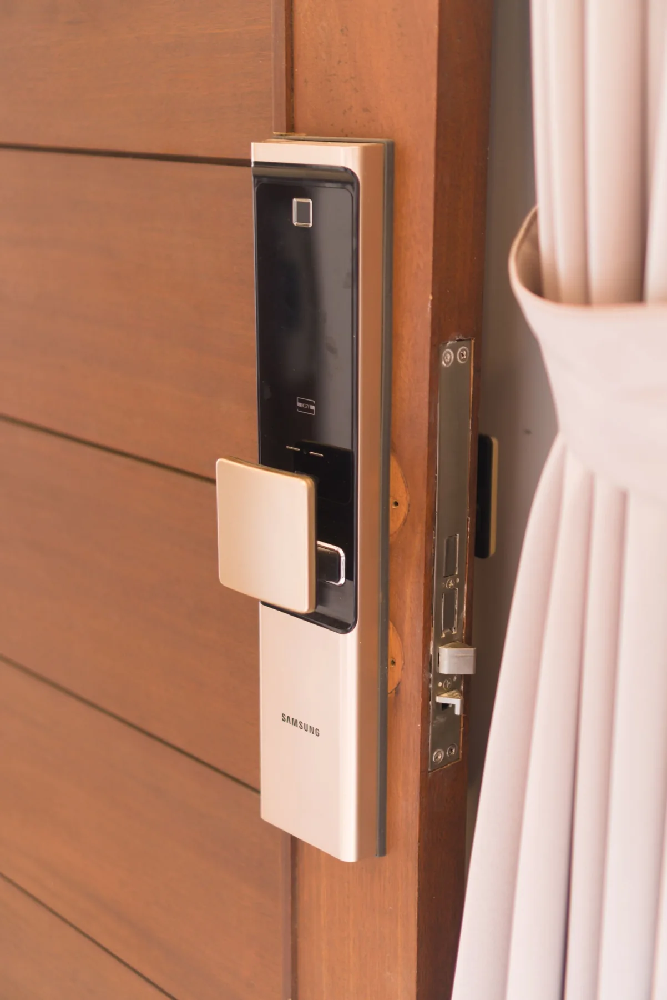

Une prestation expliquée.
Faites confirmer le périmètre, le délai et le prix. Les pièces ou travaux supplémentaires éventuels doivent figurer dans un devis que vous pouvez examiner.
Étudier les entrées de votre immeuble ou de votre local : autorisations, équipements et habitudes des utilisateurs.

VOTRE ENTRÉE, EN DÉTAIL. PHOTOGRAPHIE D’ILLUSTRATION.Quelques informations pour cadrer votre besoin et préparer un devis adapté. L’artisan confirme la solution après examen de la situation.
Faites confirmer le périmètre, le délai et le prix. Les pièces ou travaux supplémentaires éventuels doivent figurer dans un devis que vous pouvez examiner.
La porte, l’équipement, le matériel et les horaires influencent le devis. Consultez les repères tarifaires puis demandez une confirmation personnalisée.
Voir les repères tarifaires ↗Indiquez l’adresse et les conditions d’accès. Le conseiller vous confirme la prise en charge et les disponibilités des partenaires.
Préparer mon arrondissement ↗Avis publiés au sujet des interventions du réseau La Boîte à Moustaches. Les citations conservent leurs auteurs et leur source.
Le prix annoncé par téléphone a été respecté.
Extrait authentique · Consulter la source ↗Il l'a donc ouverte avec grande facilité
Extrait authentique · Consulter la source ↗De plus, leurs prix sont très raisonnables
Extrait authentique · Consulter la source ↗a finalement réparé la serrure au lieu de la changer
Extrait authentique · Consulter la source ↗une installation impeccable en peaufinant les réglages
Extrait authentique · Consulter la source ↗Équipe de serruriers très efficaces, rapides et disponibles. Tarification honnête et transparente. Recommande sans hésitation !
Avis publié · Consulter la source ↗Indiquez le type de porte, la situation, votre adresse et l’horaire. Demandez le montant ou une estimation détaillée, puis la confirmation de la prestation avant de vous engager.
Le délai dépend de votre adresse et de la disponibilité des serruriers partenaires. Le conseiller vous confirme le délai au moment de l’appel.
Préparez une pièce d’identité et un document permettant de justifier votre droit d’accès au bien. Le professionnel vous précisera les vérifications nécessaires.
Le site prévoit des majorations selon l’horaire et le lieu. Faites confirmer le prix total applicable avant l’intervention.
Appelez pour une urgence ou préparez
votre demande de devis en ligne.